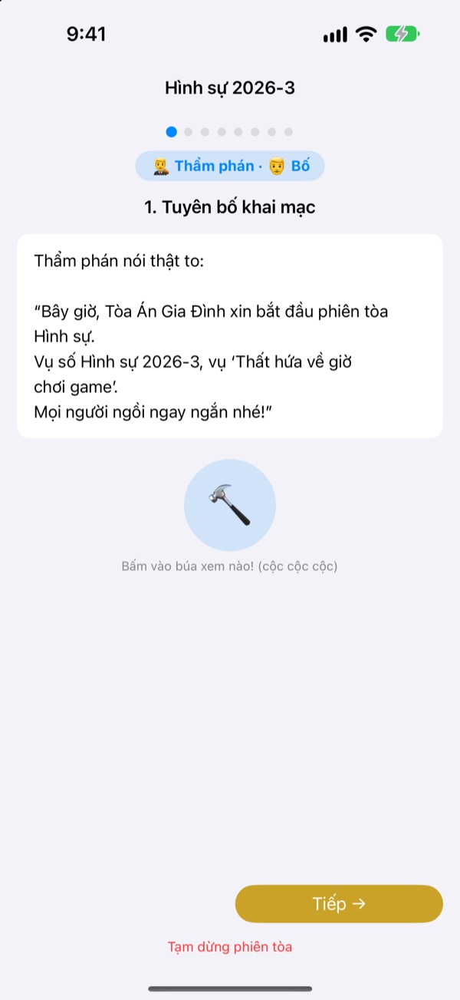
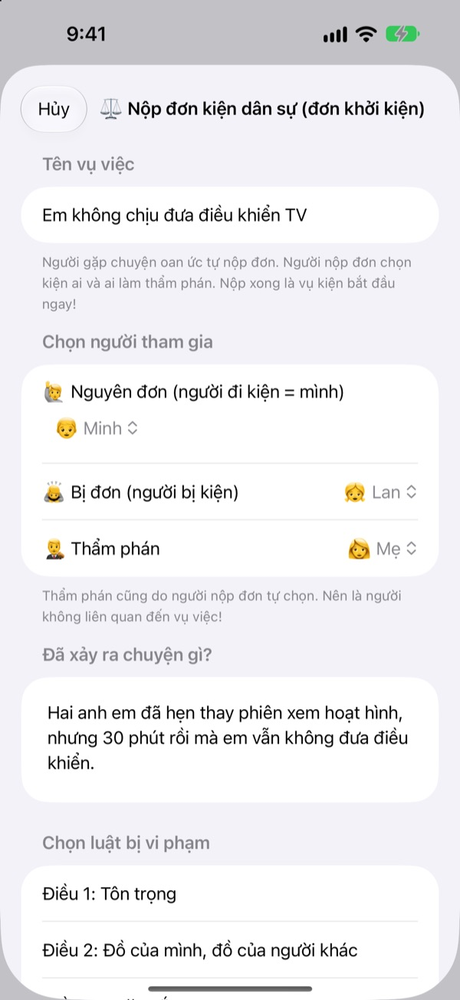
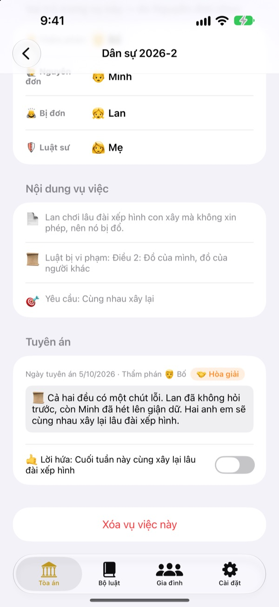
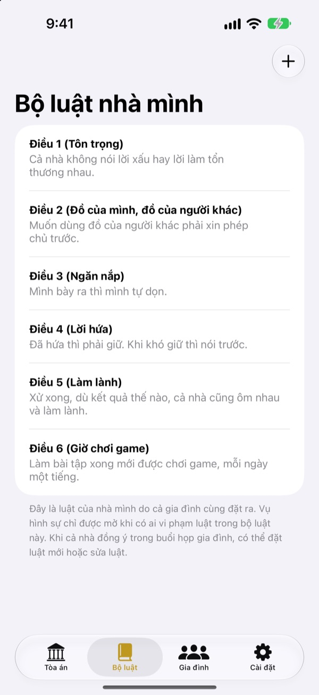

Thấy oan ức à?
Đừng khóc, ra tòa nói cho rõ
Con tự làm nguyên đơn và nộp đơn kiện, cả nhà chia nhau làm thẩm phán và luật sư. Mỗi bước đều có lời thoại cho biết đến lượt ai và nói gì, nên lần đầu chơi vẫn diễn ra như phiên tòa thật.
Không quảng cáo, không mua hàng, không cần đăng ký. Hồ sơ chỉ nằm trên máy này.

Thử mở một phiên tòa
Xử nhanh vụ "Em không chịu đưa điều khiển TV cho con". Đổi mức độ từ ngữ ở phía trên, gõ búa và bật đồng hồ thử xem. Có âm thanh, nhớ chỉnh âm lượng nhé.
"Tại nó trước!" Mệt vì lần nào cũng phải phân xử?
Hễ cãi nhau là cuối cùng người lớn phán quyết, đứa thua khóc vì thấy oan, đứa thắng cũng không hiểu vì sao mình thắng. Tòa Án Gia Đình cho trẻ một trình tự: nói hết phần mình và nghe hết phần người kia. Phán quyết khép lại bằng một lời hứa, không chỉ là hình phạt.
Ai thấy oan thì tự đi kiện
Ai thấy bất công thì làm nguyên đơn và nộp đơn kiện. Kiện ai, nhờ ai làm thẩm phán, người nộp đơn tự quyết. Con cũng có thể kiện bố mẹ.
Thấy ai phạm luật nhà, con có thể làm công tố viên và đưa ra xử hình sự. Thẩm phán chỉ được là người không phải nguyên đơn hay bị đơn.

Phán quyết kết thúc bằng lời hứa
Kèm theo phán quyết là lời hứa hoặc hình phạt cần làm, đánh dấu cho đến khi hoàn thành. Vụ đã xử xong sẽ thành án lệ của nhà mình.
Hình phạt gợi ý bắt đầu từ sửa lại như cũ và bù đắp tình cảm, gần với hàn gắn hơn là trừng phạt. Cắt giờ chơi game hay xem TV là cách cuối cùng.

Luật nhà mình do mình đặt
Ghi các quy tắc cả nhà đã thống nhất, như tôn trọng nhau, dọn dẹp, giữ lời hứa, thành điều luật và thêm hoặc sửa bất cứ lúc nào. Đơn kiện ghi rõ điều luật bị vi phạm.
Mục Học về tòa án giải thích thẩm phán, nguyên đơn, công tố viên và luật sư làm gì, phiên tòa diễn ra theo thứ tự nào.

Bắt đầu trong ba bước
- 1
Thêm người nhà
Chỉ cần tên và một biểu tượng cảm xúc. Không cần tài khoản.
- 2
Nộp đơn
Thấy oan thì kiện dân sự, phạm luật nhà thì kiện hình sự, rồi chọn thẩm phán.
- 3
Mở phiên tòa
Đọc theo lời thoại, giữ giờ bằng đồng hồ và gõ búa tuyên án.
Từ ngữ thay đổi theo tuổi của con
- Thẩm phán
- Dễ hiểu: Trọng tài · Từ ngữ tòa án: Chủ tọa
- Nguyên đơn
- Dễ hiểu: Người bị oan · Từ ngữ tòa án: Nguyên đơn
- Bị đơn
- Dễ hiểu: Người trả lời · Từ ngữ tòa án: Bị đơn
- Công tố viên
- Dễ hiểu: Người báo lỗi · Từ ngữ tòa án: Công tố viên
- Bị cáo
- Dễ hiểu: Người trả lời · Từ ngữ tòa án: Bị cáo
- Luật sư
- Dễ hiểu: Người giúp đỡ · Từ ngữ tòa án: Luật sư
- Dân sự
- Dễ hiểu: Bị oan · Từ ngữ tòa án: Dân sự
- Hình sự
- Dễ hiểu: Thất hứa · Từ ngữ tòa án: Hình sự
Chọn Mức độ từ ngữ trong Cài đặt, từ ngữ trên màn hình và trong lời thoại sẽ đổi cùng lúc. Trẻ mẫu giáo nên bắt đầu từ Dễ hiểu, trẻ tiểu học từ Cơ bản.
Câu hỏi thường gặp
Mấy tuổi thì chơi được?
Trẻ biết đọc là có thể chơi cùng bố mẹ. Có lời thoại và hướng dẫn, nếu chọn mức Dễ hiểu và người lớn đọc giúp thì trẻ nhỏ hơn cũng tham gia được.
Có thật sự miễn phí không?
Thật. Không quảng cáo, không mua hàng để mở tính năng. Trong Cài đặt có mục tặng tiền ủng hộ nhà phát triển, hoàn toàn tùy ý và không mở hay khóa tính năng nào.
Có cần Internet không?
Không. Xử án và hồ sơ đều chạy ngoại tuyến. Chỉ khi gửi góp ý từ Cài đặt mới cần Internet và đăng nhập iCloud.
Hồ sơ được lưu ở đâu?
Người nhà, luật nhà, phiên xử và phán quyết chỉ lưu trên máy, không gửi lên máy chủ. Thứ duy nhất đến tay nhà phát triển là góp ý bạn tự gửi và thống kê sử dụng ẩn danh không nhận ra bạn.
Có sao lưu hay chuyển sang máy khác được không?
Dùng Lưu hồ sơ trong Cài đặt để xuất ra tệp, rồi dùng Tải hồ sơ trên máy kia để mở tệp đó, mọi thứ sẽ khôi phục y nguyên. Bản sao lưu xuất từ phiên bản web cũ cũng tải được.
Dùng trên iPad được không?
Được, cả iPhone lẫn iPad. Màn hình lớn rất hợp để cả nhà ngồi quanh mở phiên tòa.
Lỡ hình phạt quá nặng thì sao?
Ở bước công tố viên đề nghị hình phạt, lời thoại nhắc "đừng quá nặng, phải làm được". Hình phạt gợi ý cũng bắt đầu từ việc hàn gắn: sửa lại như cũ, bù đắp tình cảm, đặt mình vào vị trí người kia.
Tôi muốn xóa sạch dữ liệu.
Xóa ứng dụng là mọi hồ sơ trên máy cũng bị xóa theo. Không có hồ sơ nào ra khỏi máy nên không còn lưu ở đâu khác. Muốn xóa góp ý đã gửi, hãy gửi email cho chúng tôi.
Lỗi, ý tưởng hay bất cứ điều gì, cứ viết cho leeo@kakao.com. Bạn cũng có thể gửi góp ý trong Cài đặt của ứng dụng.